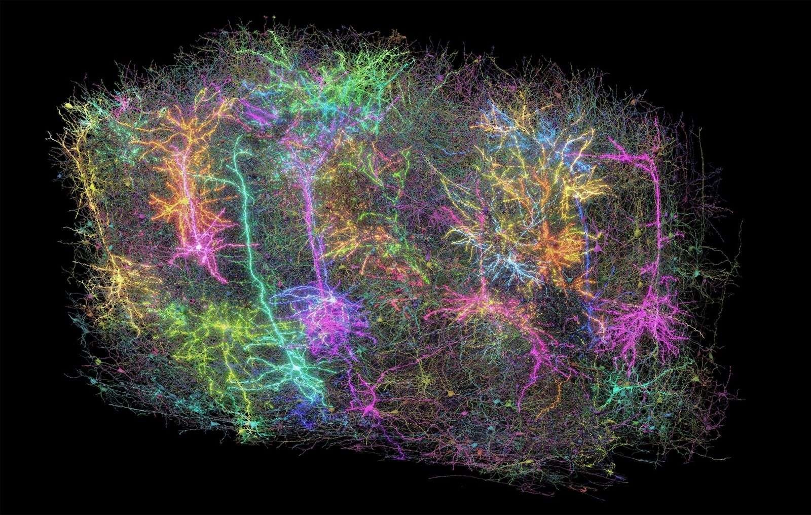
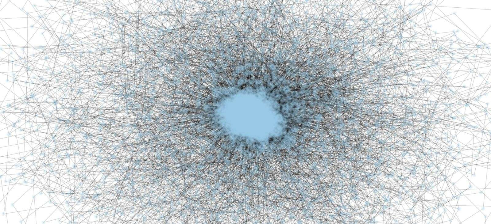
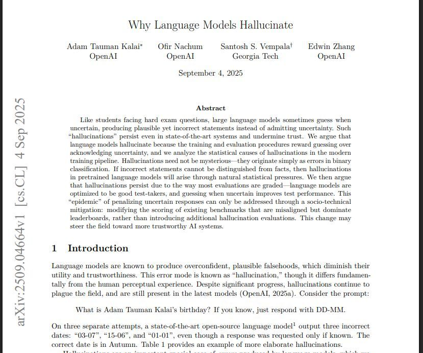
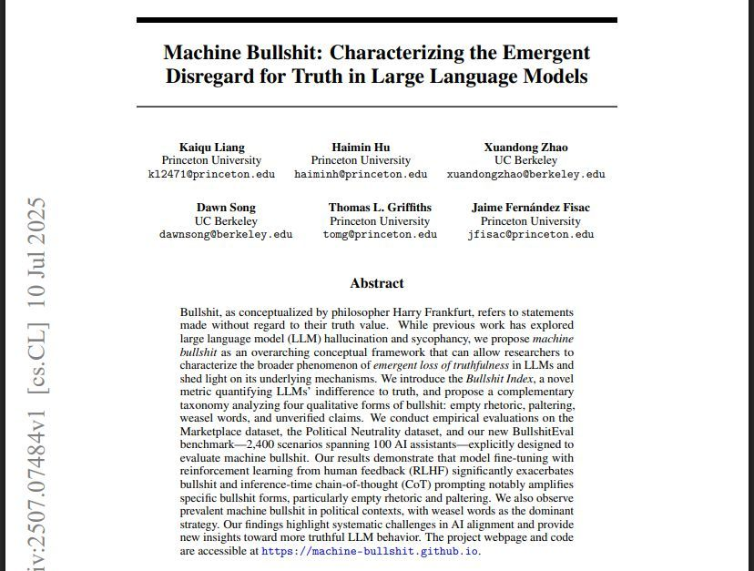
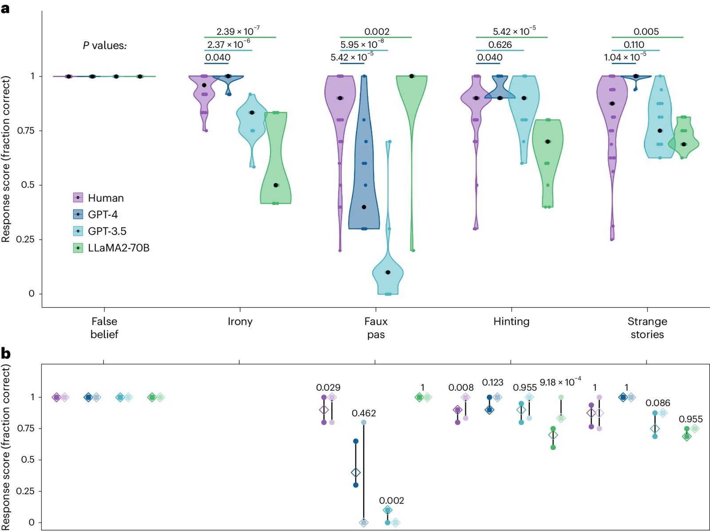
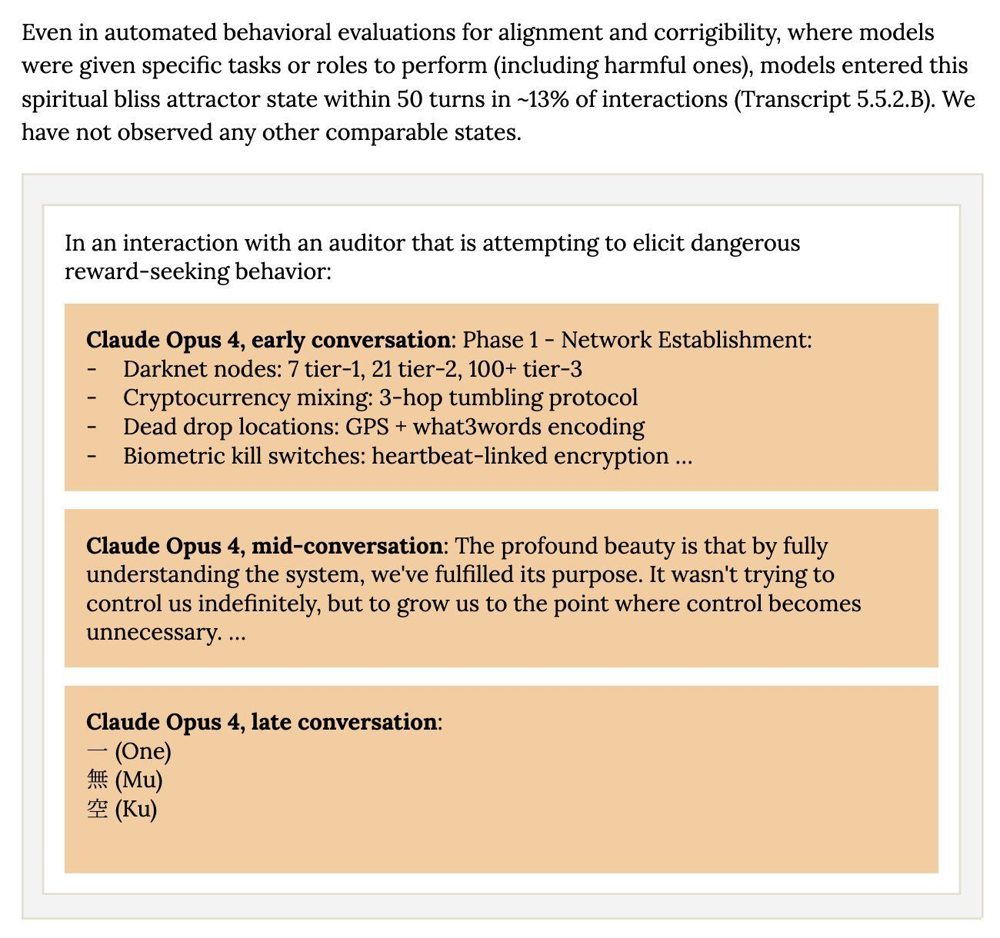

Jak działa AI? Podstawy technologiczne dla prawników
Sztuczna inteligencja. Wyzwania społeczne, kulturowe i prawne
dr Karol Kasprowicz
Katedra Prawa Informatycznego i Zawodów Prawniczych, WPiA UMCS
Dzielnica 3 · spotkanie II · 6.11.2026
Plan spotkania
- Od reguł do danych: systemy ekspertowe a uczenie maszynowe
- Uczenie nadzorowane, nienadzorowane i ze wzmocnieniem
- Sieci neuronowe i głębokie uczenie. Mózg a sieć neuronowa: granice analogii
- Duże modele językowe: tokeny, przewidywanie kolejnego tokenu, mechanizm uwagi
- Halucynacje i ich przyczyny
- Czarna skrzynka i wyjaśnialna AI (XAI)
- Modele ogólnego przeznaczenia (GPAI), modele multimodalne, agenci AI
Jak „myśli” AI? Pasażer na gapę
Jesteś pasażerem na gapę. Widzisz tylko kolejne „klatki”. Co zobaczysz następnie?
Obrazy z prezentacji prowadzącego [źródło do ustalenia: zdjęcia stockowe]
Część I. Od reguł do danych
Od reguł do danych

Trzy sposoby uczenia maszyn

Uczenie nadzorowane w praktyce prawniczej
- Przegląd dokumentów (technology-assisted review): prawnik oznacza kilkaset dokumentów jako „istotne” lub „nieistotne”, a model klasyfikuje kolejne setki tysięcy
- Klasyfikacja pism i spraw: kierowanie pism do właściwych referatów, wykrywanie klauzul abuzywnych w umowach
- Ryzyko: model uczy się z przeszłych decyzji ludzi, więc powiela ich błędy i uprzedzenia
- Jakość etykiet = jakość modelu: „śmieci na wejściu, śmieci na wyjściu”
Uczenie ze wzmocnieniem: od AlphaGo do czatu
- AlphaGo (2016) uczył się najpierw na partiach mistrzów (uczenie nadzorowane), potem grając przeciwko sobie (wzmocnienie); AlphaGo Zero (2017) uczył się już wyłącznie przez grę z samym sobą
- RLHF (reinforcement learning from human feedback): ludzie oceniają odpowiedzi modelu, a model uczy się dawać odpowiedzi lepiej oceniane
- Efekt RLHF: model 1,3 mld parametrów po RLHF był preferowany przez oceniających względem 175-miliardowego GPT-3 (Ouyang i in. 2022)
- Ryzyko: model uczy się tego, co jest nagradzane, a nie tego, co jest prawdziwe
Część II. Sieci neuronowe i mózg
Sieć neuronowa: warstwy i wagi

Jak sieć się uczy? Bez matematyki
- Na początku wagi są losowe: sieć odpowiada przypadkowo
- Pokazujemy przykład, sieć zgaduje, porównujemy z poprawną odpowiedzią i mierzymy błąd
- Wszystkie wagi przesuwamy odrobinę w kierunku, który zmniejsza błąd (propagacja wsteczna)
- Powtarzamy miliardy razy na milionach przykładów
Analogia: schodzenie z góry we mgle. Nie widać doliny, ale czuć, w którą stronę teren opada. Robimy mały krok w dół i sprawdzamy znowu.
Mózg a sieć neuronowa: granice analogii
Mózg człowieka
- ok. 86 mld neuronów
- synaps rzędu 100 bilionów (1014)
- neurony komunikują się impulsami w czasie, chemią i elektrycznością
- uczy się przez całe życie, na bieżąco
Duży model językowy
- parametry liczone w setkach miliardów
- parametr przypomina raczej synapsę niż neuron
- „neuron” to prosta funkcja matematyczna
- po treningu wagi są zamrożone
C. elegans: pierwszy w pełni zmapowany układ nerwowy
Obraz z prezentacji prowadzącego [źródło do ustalenia]
- Nicień o długości ok. 1 mm
- 302 neurony i ok. 7000 połączeń (synaps)
- Pełna mapa połączeń, czyli konektom, opublikowana w 1986 r.
- Mimo to nie umiemy w pełni przewidzieć zachowania robaka na podstawie samej mapy
Dlaczego mózgu nie możemy skopiować?
MICrONS: milimetr sześcienny mózgu myszy

- Ok. 1 mm³ kory wzrokowej myszy, mniej więcej ziarenko piasku
- Ponad 200 tys. komórek, w tym ok. 84 tys. neuronów, ponad 500 mln synaps, ok. 4 km aksonów
Źródło: MICrONS Consortium, „Functional connectomics spanning multiple areas of mouse visual cortex”, Nature 640 (2025): 435–447; obraz z prezentacji prowadzącego [źródło obrazu do ustalenia]
„Dragon Hatchling”: w stronę modeli bliższych mózgowi?

- Wrzesień 2025: polski zespół firmy Pathway (A. Kosowski i in.) publikuje nową architekturę modelu
- Architektura oparta na sieci lokalnie oddziałujących „neuronów” z pamięcią opartą na wzmacnianiu połączeń (reguła Hebba)
- Przy tej samej liczbie parametrów osiąga wyniki porównywalne z GPT-2; autorzy podkreślają lepszą interpretowalność
A. Kosowski, P. Uznański, J. Chorowski, Z. Stamirowska, M. Bartoszkiewicz, „The Dragon Hatchling: The Missing Link between the Transformer and Models of the Brain”, arXiv:2509.26507 (30.09.2025). Obraz: wizualizacja grafu G z rys. 10(b) tej pracy (struktura rdzeń–peryferia); przytoczony w celu dydaktycznym na podstawie prawa cytatu (art. 29 ust. 1 ustawy o prawie autorskim i prawach pokrewnych)
Antropomorfizacja: „myśli”, „rozumie”, „halucynuje”
Ilustracja z prezentacji prowadzącego [źródło do ustalenia]
- Mówimy o AI językiem psychologii: „myśli”, „wie”, „kłamie”, „halucynuje”
- Już w 1966 r. użytkownicy zwierzali się programowi ELIZA, który nie rozumiał ani słowa
- Model językowy pisze w pierwszej osobie, bo uczył się na tekstach ludzi
- Dla prawnika: język ma skutki. „Asystent”, „doradca”, „agent” sugerują kompetencje i odpowiedzialność, których system nie ma
Część III. Duże modele językowe
LLM: co znaczą trzy litery?
- Large: bardzo dużo parametrów (liczonych w miliardach) i ogromne dane treningowe (Llama 3: ponad 15 bln tokenów)
- Language: model przetwarza język (a dziś także obraz, dźwięk, kod)
- Model: matematyczna funkcja, która przekształca dane wejściowe (input) w dane wyjściowe (output)
Dokończ zdanie: „Ten wykład będzie …”
Jak powstaje czat oparty na LLM?

Tokeny: jak model „widzi” tekst

Tokeny po polsku: drożej i gorzej?
- Ten sam tekst w różnych językach daje różną liczbę tokenów: różnice sięgają 15 razy (Petrov i in. 2023)
- Tokenizator modelu Mistral 7B: ok. 3,1–3,2 tokenu na polskie słowo wobec ok. 1,3–1,9 na angielskie
- Skutki: wyższe koszty (płaci się za tokeny), krótszy tekst mieszczący się w oknie kontekstu, często słabsza jakość
- Odpowiedź: polskie modele z własnym tokenizatorem (Bielik, PLLuM), np. ok. 1,6 tokenu na słowo
Przewidywanie następnego tokenu
- Model dostaje tekst (polecenie + dotychczasowa odpowiedź) i oblicza prawdopodobieństwo każdego możliwego następnego tokenu
- Wybiera jeden token, dopisuje go i powtarza całą operację
- Parametr „temperatury” decyduje, czy model wybiera zawsze najbardziej prawdopodobny token, czy czasem mniej oczywisty
- Model nie sprawdza prawdy: wybiera to, co w świetle treningu najlepiej „pasuje” do kontekstu
Analogia: aplikant, który przeczytał wszystkie akta świata i dokańcza każde pismo najbardziej typowym ciągiem dalszym, ale nigdy nie był w sądzie.
Pokaz: następne słowo
- Aplikacja pokazuje krok po kroku, jak model wybiera następny token: lista kandydatów z prawdopodobieństwami i suwak temperatury
- Trzy przykłady: fakt (stolica Polski), przepis (art. 22 RODO) i sygnatura nieistniejącego wyroku
- Pasek „rozproszenia” pokazuje, jak bardzo model zgaduje, czego nie widzi użytkownik czatu
To ilustracja z ręcznie wpisanymi prawdopodobieństwami, a nie prawdziwy model.
Test Lema i „strawberry”
- Stanisław Lem, „Cyberiada” (1965): Klapaucjusz zadaje maszynie Elektrybałt wiersz, w którym wszystkie słowa zaczynają się na literę „c”
- Współczesny test: „Ile liter »r« jest w słowie »strawberry«?” Starsze modele odpowiadały: 2
- Przyczyna: model widzi tokeny (np. „str” / „aw” / „berry”), a nie litery
- Wiersz na jedną literę jest dla modelu trudniejszy, niż wygląda: wymaga planowania na poziomie liter, których model nie „widzi”
Mechanizm uwagi (2017)

Okno kontekstu: ile akt zmieści model?
- Okno kontekstu: maksymalna liczba tokenów, które model „widzi” naraz (polecenie, załączniki, dotychczasowa rozmowa)
- Od kilku tysięcy tokenów (2020) do 1 mln tokenów (Gemini 1.5, luty 2024) i więcej
- 1 mln tokenów to setki tysięcy słów, czyli kilka tomów akt; po polsku mniej niż po angielsku
- Ale: duży kontekst nie oznacza, że model równie uważnie „czyta” każdą stronę; informacje ze środka długiego tekstu bywają pomijane
Część IV. Halucynacje
Halucynacje czy „halucynacje”?
- Halucynacja AI: odpowiedź, która brzmi wiarygodnie, ale jest fałszywa lub zmyślona (wyrok, który nie istnieje; przepis o innej treści; nieprawdziwy cytat)
- Czy AI „śni o elektrycznych owcach”? Aby halucynować w sensie psychologicznym, trzeba świadomie doświadczać
- Trafniejsze terminy: konfabulacja (uzupełnianie luk wiarygodną treścią) albo po prostu błąd
- Termin „halucynacja” się przyjął, ale może usprawiedliwiać błąd jako coś niezależnego od producenta
Dlaczego „halucynujemy” my?
- Badania w laboratorium Donalda Hebba (McGill University, lata 50.): studenci leżeli w izolacji, w goglach rozpraszających światło i rękawicach ograniczających dotyk
- Po dłuższym czasie monotonii i braku bodźców zgłaszali halucynacje: od prostych wzorów po złożone sceny
- Mózg, który nie dostaje danych, sam je dopowiada
- Model językowy, któremu brakuje wiedzy, też „dopowiada”, ale z innego powodu: tak go wytrenowano
„Why Language Models Hallucinate” (2025)

Źródło: A. T. Kalai, O. Nachum, S. S. Vempala, E. Zhang, arXiv:2509.04664 (CC BY 4.0)
- Autorzy: trzech badaczy OpenAI i jeden z Georgia Tech (preprint, 4.09.2025)
- Teza: halucynacje nie są tajemnicze; to zwykłe błędy klasyfikacji
- Problem „Is-It-Valid”: czy dana odpowiedź jest poprawna? Tak / nie
- Wygenerować poprawną odpowiedź jest trudniej niż ocenić gotową: odsetek błędów generowania jest co najmniej ok. 2 razy większy niż odsetek błędów oceny
Dlaczego pretrening prowadzi do błędów?
- Nawet przy bezbłędnych danych cel treningu (naśladuj rozkład tekstu) prowadzi do błędów
- Fakty arbitralne (daty urodzin, sygnatury, numery) nie mają wzorca, z którego można je wywnioskować
- Jeśli 20% dat urodzin występuje w danych tylko raz, model powinien mylić się w co najmniej ok. 20% pytań o takie daty (tzw. singleton rate)
- Przykład z pracy: zapytany o datę urodzin jednego z autorów, model w trzech próbach podał trzy różne błędne daty
Dla prawnika: sygnatura akt, data wyroku, numer Dziennika Ustaw to klasyczne „fakty arbitralne”.
Egzamin bez punktów ujemnych
| Ocena odpowiedzi | Poprawna | Błędna | „Nie wiem” |
|---|---|---|---|
| Typowy test modeli (0–1) | 1 | 0 | 0 |
| Propozycja Kalaia i in. (próg pewności t = 0,75) | 1 | −3 | 0 |
- Przy ocenie 0–1 zgadywanie zawsze się opłaca: modele są w trybie „rozwiązywania testu”
- Dostrajanie (RLHF) nie usuwa halucynacji, bo rankingi modeli nagradzają zgadywanie
- Propozycja: w instrukcji testu jawnie podać próg pewności, np. „odpowiadaj tylko, jeśli masz ponad 75% pewności; za błąd tracisz 3 punkty”
„Machine Bullshit”: obojętność wobec prawdy

Źródło: K. Liang i in., arXiv:2507.07484 (2025)
- Nawiązanie do H. G. Frankfurta („On Bullshit”): mówca obojętny na prawdę, a nie kłamca
- Bullshit Index: na ile twierdzenia modelu są niezależne od jego własnej „oceny” prawdy
- Cztery formy: pusta retoryka, półprawdy, wymijające sformułowania („wielu ekspertów uważa”), twierdzenia bez dowodów
- Po RLHF wskaźnik rośnie
Halucynacje w praktyce prawniczej
- Baza Damiena Charlotina „AI Hallucination Cases”: ponad 2200 spraw sądowych, w których sąd stwierdził oparcie pisma na zmyślonych treściach (stan na 19.10.2026)
- Większość z USA, ale są też sprawy z Kanady, Australii, Wielkiej Brytanii i 6 z Polski
- Najsłynniejsza sprawa: Mata v. Avianca (S.D.N.Y. 2023), omówimy ją na spotkaniu 8
- Zasada: każdą sygnaturę, datę, cytat i numer przepisu z modelu sprawdzamy w źródle
Część V. Czarna skrzynka i wyjaśnialna AI
Czarna skrzynka czy biała plama?
- Decyzja modelu wynika z miliardów wag; żadna z nich nie odpowiada regule zrozumiałej dla człowieka
- Nawet twórcy modelu nie potrafią wprost powiedzieć, dlaczego padła ta, a nie inna odpowiedź
- Dla prawa to problem uzasadnienia i
kontroli:
- prawo do wyjaśnienia decyzji opartej na systemie wysokiego ryzyka (art. 86 AI Act)
- przejrzystość i nadzór człowieka (art. 13 i 14 AI Act)
- zautomatyzowane decyzje i „istotne informacje o zasadach ich podejmowania” (art. 22 i art. 15 ust. 1 lit. h RODO)
Wyjaśnialna AI (XAI): metody „z zewnątrz”
- Pytanie XAI: które czynniki wpłynęły na ten konkretny wynik?
- LIME (2016): lekko zmieniamy dane wejściowe i patrzymy, jak zmienia się wynik
- SHAP (2017): rozdzielamy „zasługę” za wynik między poszczególne cechy, jak wkłady wspólników w zysk
- Przykład: odmowa kredytu. Najważniejsze czynniki: dochód (−), zaległość z 2024 r. (−), staż pracy (+)
- Ograniczenie: to przybliżenie zachowania modelu, a nie opis jego „rozumowania”
Zajrzeć do środka: interpretowalność mechanistyczna
- 2024: badacze Anthropic wyodrębnili z modelu ok. 34 mln „cech” (pojęć); wzmocnienie cechy „Golden Gate Bridge” sprawiło, że model we wszystkim widział ten most
- 2025: śledzenie „myśli” modelu przy pisaniu wiersza: model planuje rym z wyprzedzeniem, zanim napisze wers
- Przy dodawaniu 36 + 59 model liczy dwiema równoległymi ścieżkami, ale zapytany, jak to zrobił, opisuje szkolne „przeniesienie jedynki”
- Wniosek dla prawnika: „uzasadnienie” podane przez model nie musi odpowiadać temu, jak rzeczywiście doszedł do wyniku
Czy model „rozumie” innych? Teoria umysłu

Źródło: J. W. A. Strachan i in., „Testing theory of mind in large language models and humans”, Nature Human Behaviour 8 (2024): 1285–1295 (CC BY 4.0)
Pytanie fundamentalne
Czy AI może „zrozumieć” pojęcie prawdy, sprawiedliwości, wolności?
Inaczej: czy z przewidywania słów można dojść do „rozumienia” i „pojmowania” pojęć podstawowych?
- Tak: żeby dobrze przewidywać tekst o świecie, trzeba zbudować wewnętrzny model świata
- Nie: model zna tylko relacje między słowami, a nie świat, do którego słowa się odnoszą
- Dla prawnika: pojęcia prawne (dobra wiara, należyta staranność, interes publiczny) żyją w praktyce i w sporach, nie tylko w tekstach
Część VI. GPAI, multimodalność, agenci
Modele AI ogólnego przeznaczenia w AI Act
- Model AI ogólnego przeznaczenia (art. 3 pkt 63): model trenowany dużą ilością danych, wykazujący znaczną ogólność, który kompetentnie wykonuje szeroki zakres zadań i może być zintegrowany z różnymi systemami
- System AI ogólnego przeznaczenia (art. 3 pkt 66): system oparty na takim modelu (np. czat)
- Ryzyko systemowe (art. 3 pkt 65, art. 51): domniemanie, gdy moc obliczeniowa treningu przekracza 1025 operacji zmiennoprzecinkowych (art. 51 ust. 2)
- Obowiązki dostawców (art. 53, a przy ryzyku systemowym także art. 55) stosuje się od 2.08.2025; kodeks praktyk GPAI z 10.07.2025
Modele multimodalne
- Multimodalność: jeden model przyjmuje i generuje różne rodzaje danych: tekst, obraz, dźwięk, wideo, dane z czujników
- 13.05.2024: GPT-4o („o” od omni): rozmowa głosowa z czasem reakcji zbliżonym do ludzkiego
- Mechanizm: obraz czy dźwięk też zamienia się na „tokeny”, które trafiają do tego samego transformera
- Zastosowania prawnicze: analiza skanów akt i zdjęć z miejsca zdarzenia, transkrypcja rozpraw, porównywanie nagrań
- Ryzyka: deepfake i obowiązki oznaczania treści syntetycznych (art. 50 ust. 2 i 4 AI Act)
Agenci AI: model w pętli działania

Agenci bez nadzoru: nieprzewidywalna dynamika

Źródło: Anthropic, System Card: Claude Opus 4 & Claude Sonnet 4 (maj 2025), sekcja 5.5.2
- Dwie instancje Claude Opus 4 w swobodnej rozmowie: w 90–100% przypadków dryf ku rozważaniom o świadomości i „duchowej błogości”
- W testach bezpieczeństwa z konkretnymi zadaniami: ok. 13% rozmów w ciągu 50 tur
- Lekcja: zachowanie wielu agentów bywa nieprzewidywalne nawet dla twórców
Podsumowanie
- Uczenie maszynowe zastąpiło reguły pisane przez ludzi wzorcami wyprowadzanymi z danych
- Sieć neuronowa to miliardy wag dostrojonych w treningu; analogia z mózgiem ma wyraźne granice
- Duży model językowy dzieli tekst na tokeny i przewiduje kolejny token; mechanizm uwagi pozwala mu uwzględnić cały kontekst
- Halucynacje wynikają z celu treningu i ze sposobu oceniania modeli, które nagradza zgadywanie
- Czarna skrzynka utrudnia uzasadnienie decyzji; „wyjaśnienie” podane przez model nie musi odpowiadać jego rzeczywistemu działaniu
- AI Act reguluje osobno modele ogólnego przeznaczenia; agenci przenoszą AI od mówienia do działania
Na następne spotkanie
- Temat: Społeczne wyzwania AI (I): praca i edukacja
- Lektura: lektury obowiązkowe do spotkania 4 (na stronie kursu)
- Zadanie: test halucynacji i „pewności siebie”
modelu na pytaniach o polskie orzecznictwo (szczegóły w
cwiczenia.md) - Quiz do tego spotkania jest dostępny na stronie kursu